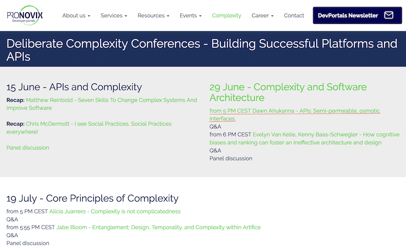
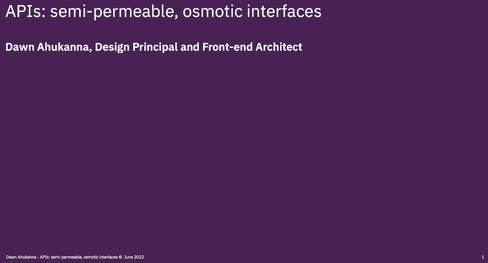

APIs: Semi-permeable, osmotic interfaces

Jun 29 @ 17:00 - 19:00 CEST
Introduction
APIs are permeable, bi-directional, interaction boundaries between the intended High Fidelity human-centered interfaces and the interpretation into coded implementation.
Moving beyond “red-lining” static images, will discuss approaches and recommendations to consider the human developers and operators experiences with your APIs.
Speaker bio
Dawn is a Design Principal and Front-End Architect for IBM Systems business unit. Collaborating and co-creating user-focused solutions with clients and business partners, streamlining IT asset management and operation using automation and preventative maintenance.
The presentations will be followed by a panel discussion.
Presentation


APIs - Semi-permeable, osmotic interfaces by Dawn Ahukanna is licensed under a Creative Commons Attribution-NonCommercial-NoDerivatives 4.0 International License.